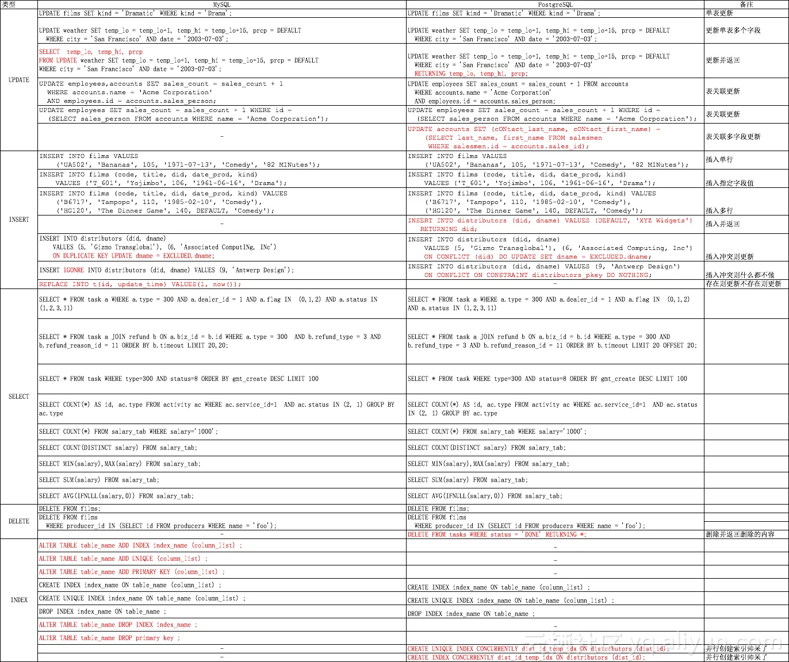

PostgreSQL与MySQL的语法差异
Table of Contents
1. 展示所有数据库
- MySQL:
show databases - PostgreSQL:
\l
2. 使用数据库
- MySQL:
use {dbname} - PostgreSQL:
\c {dbname}
3. 显示模式（schema）
- MySQL:
show schemas - PostgreSQL:
\dn
4. 展示表
- MySQL:
show tables - PostgreSQL:
\dt或\d：给出当前数据库中的表列表\dt+或\d+：给出当前数据库中表的列表以及大小、描述等附加信息
5. 描述表
- MySQL:
desc {table_name}或describe {table_name}
- PostgreSQL:
\dt {table_name}给出特定表的基本信息\dt+ {table_name}提供有关特定表的附加信息\d+ {table_name}也提供索引级别的详细信息以获取更具体的信息。（首选方式）
6. 显示创建表
- MySQL:
show create table {table_name}显示用户创建表的确切 DDL
- PostgreSQL:
pg_dump -st {table_name} {dbname}转储确切的表 DDL
7. 显示用户或角色列表
- MySQL:
select User, Host from mysql.user;
- PostgreSQL:
\du
8. 显示进程列表
- MySQL:
show processlist
- PostgreSQL:
select * from pg_stat_activity
9. 评论、引号、区分大小写
- 注释：
- MySQL:
# - PostgreSQL:
--
- MySQL:
- 引号
- MySQL 支持单引号（
'）和双引号（"） - PostgreSQL 只支持单引号（
'）
- MySQL 支持单引号（
- 区分大小写
- PostgreSQL: 区分大小写，示例：
WHERE site = 'tipseason.com'可能会给出与WHERE site = 'TipSeason.com'不同的结果 - MySQL: 不区分大小写，上面的例子中，会给出相同的结果
- PostgreSQL: 区分大小写，示例：
语法对比
